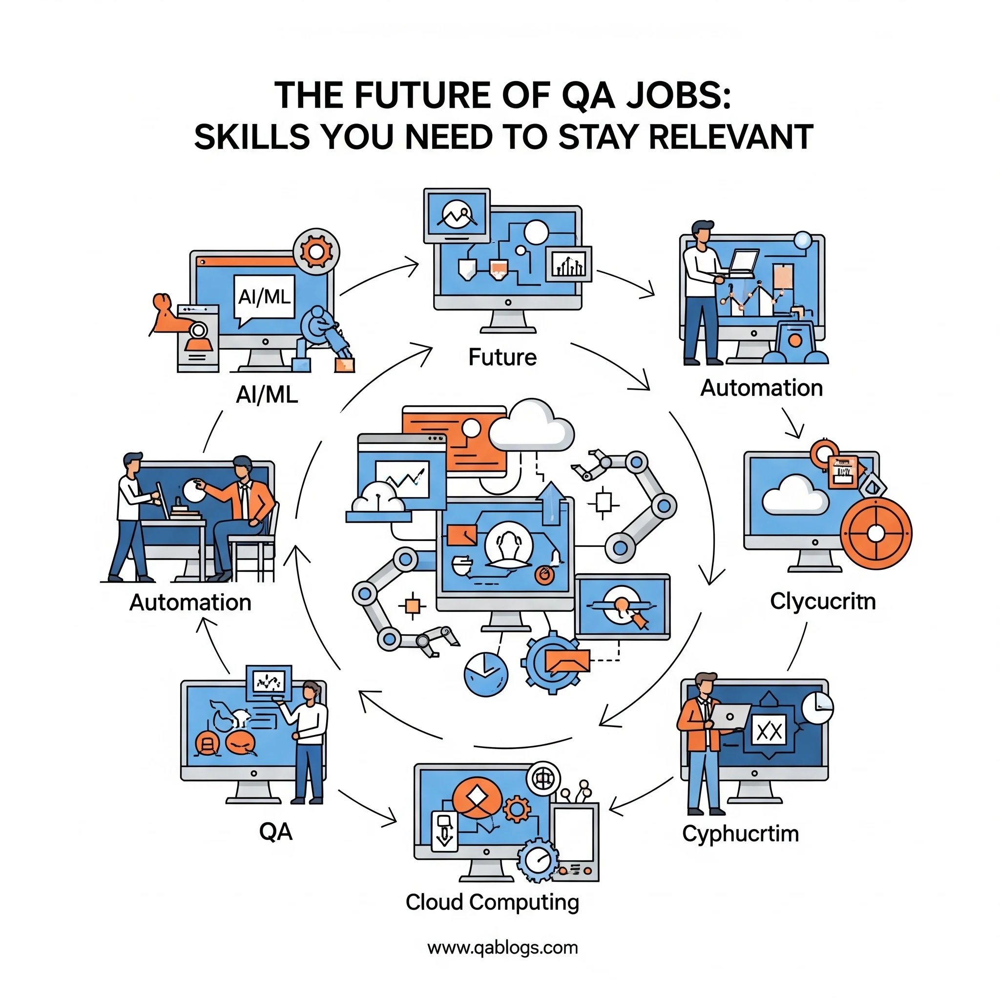

The Future of QA Jobs: Skills You Need to Stay Relevant

Key Takeaways
- QA roles are evolving from manual testing to quality engineering with technical skills becoming essential.
- Critical skills include test automation, programming, cloud/DevOps integration, and AI/ML understanding.
- The global software testing market is expected to reach $60 billion by 2027, creating new opportunities.
- Modern QA professionals need to be technical partners, not just gatekeepers.
- Continuous learning and adaptation to emerging technologies is crucial for career success.
The quality assurance landscape is evolving at breakneck speed. While traditional manual testing once dominated the field, today's QA professionals face a reality where automation, artificial intelligence, and continuous delivery pipelines are reshaping everything we thought we knew about software testing. The question isn't whether QA jobs will exist in the future—it's what skills you need to master to remain competitive and valuable in this transformed landscape.
According to recent industry reports, the global software testing market is expected to reach $60 billion by 2027, yet the nature of QA roles is shifting dramatically. Companies are no longer just looking for testers who can execute test cases; they want quality engineers who can architect testing strategies, implement automation frameworks, and collaborate seamlessly with development teams in agile environments.
The Evolution of QA: From Manual Testing to Quality Engineering
The Traditional QA Paradigm
Not too long ago, QA teams operated in silos. Testers received finished features, executed pre-written test cases, and reported bugs back to development teams. This waterfall approach to quality assurance, while systematic, often created bottlenecks and delayed releases.
The Modern Quality Engineering Approach
Today's quality engineering integrates testing throughout the entire software development lifecycle. QA professionals now work alongside developers from day one, contributing to architectural decisions, writing automated tests before code implementation, and ensuring quality gates are built into CI/CD pipelines.
This shift represents more than just a change in process—it's a fundamental reimagining of how quality is achieved in software development. Modern QA professionals are expected to be technical partners, not just gatekeepers.
Critical Skills for the Future QA Professional
1. Test Automation Mastery
Why It Matters: Manual testing alone cannot keep pace with modern development cycles. Teams deploying code multiple times per day need automated test suites that can provide immediate feedback.
Essential Tools and Frameworks:
- Selenium WebDriver for web application testing
- Cypress for modern JavaScript applications
- Playwright for cross-browser testing
- REST Assured for API testing
- TestNG/JUnit for test organization and execution
Real-World Application: Consider Netflix's approach to testing. They deploy thousands of changes daily across their platform. Their QA engineers have built sophisticated automation frameworks that can test everything from user interface interactions to backend service integrations, enabling rapid deployment without sacrificing quality.
2. Programming and Scripting Proficiency
Core Languages to Master:
- Python: Excellent for test automation, data analysis, and machine learning applications in testing
- JavaScript/TypeScript: Essential for modern web application testing
- Java: Still dominant in enterprise environments and automation frameworks
- SQL: Critical for database testing and data validation
Beyond Basic Coding: Understanding object-oriented programming principles, design patterns, and clean code practices elevates your automation from simple scripts to maintainable, scalable test suites.
3. Cloud and DevOps Integration
Key Competencies:
- Containerization: Docker and Kubernetes for consistent testing environments
- CI/CD Pipeline Integration: Jenkins, GitLab CI, Azure DevOps, GitHub Actions
- Cloud Platforms: AWS, Azure, Google Cloud testing services
- Infrastructure as Code: Terraform, CloudFormation for test environment management
Practical Example: A major e-commerce platform reduced their testing cycle from 2 weeks to 2 hours by implementing cloud-based testing infrastructure that automatically spins up test environments, executes comprehensive test suites, and tears down resources—all triggered by code commits.
4. API and Microservices Testing
Modern applications are built on microservices architectures, making API testing crucial. QA professionals need to understand:
- RESTful and GraphQL API testing
- Service virtualization and mocking
- Contract testing with tools like Pact
- Performance testing at the API level
5. Performance and Security Testing
Performance Testing Skills:
- Load testing with JMeter, k6, or LoadRunner
- Understanding of performance metrics and analysis
- Scalability testing strategies
Security Testing Fundamentals:
- OWASP Top 10 vulnerabilities
- Security testing tools (OWASP ZAP, Burp Suite)
- Secure coding practices awareness
Emerging Technologies Reshaping QA
Artificial Intelligence and Machine Learning in Testing
AI is transforming QA in several ways:
Intelligent Test Generation: Tools like Testim and Mabl use machine learning to create and maintain automated tests, reducing the manual effort required for test creation.
Visual Testing: AI-powered tools can detect visual regressions that traditional functional tests might miss, ensuring user interfaces look correct across different browsers and devices.
Predictive Analytics: ML algorithms can analyze historical data to predict which areas of an application are most likely to contain bugs, enabling more targeted testing strategies.
Shift-Left and Shift-Right Testing
Shift-Left Testing integrates quality practices earlier in the development cycle:
- Test-driven development (TDD)
- Behavior-driven development (BDD)
- Static code analysis
- Unit testing collaboration
Shift-Right Testing extends testing into production:
- Monitoring and observability
- A/B testing
- Chaos engineering
- User feedback integration
Skills Comparison: Traditional vs. Future QA Roles
| Traditional QA | Future QA Engineer |
|---|---|
| Manual test execution | Automated test development |
| Bug reporting | Quality advocacy and consulting |
| Testing in isolation | Cross-functional collaboration |
| Tool usage | Tool creation and customization |
| Reactive testing | Proactive quality engineering |
| Documentation-heavy | Code-heavy deliverables |
Building Your QA Career Roadmap
Short-Term Goals (6-12 months)
- Master one automation framework thoroughly
- Learn a programming language relevant to your technology stack
- Get hands-on experience with CI/CD tools
- Understand API testing fundamentals
Medium-Term Goals (1-2 years)
- Develop expertise in cloud testing platforms
- Learn performance testing tools and methodologies
- Understand containerization and orchestration
- Build knowledge of security testing practices
Long-Term Goals (2-3 years)
- Become proficient in AI-powered testing tools
- Develop leadership skills for quality engineering teams
- Master multiple programming languages and frameworks
- Contribute to open-source testing tools and frameworks
Practical Steps to Upgrade Your Skills
1. Hands-On Learning Approach
Create personal projects that demonstrate your skills. Build a comprehensive automation framework for a sample application, implement CI/CD pipelines, and document your process. This practical experience is more valuable than theoretical knowledge alone.
2. Community Engagement
Join QA communities, attend testing conferences, and participate in online forums. The testing community is remarkably supportive, and engaging with peers can accelerate your learning.
3. Certification and Continuous Learning
While not always necessary, certifications can validate your skills:
- ISTQB certifications for foundational knowledge
- Cloud provider certifications (AWS, Azure, GCP)
- Tool-specific certifications (Selenium, Cypress)
4. Cross-Functional Collaboration
Work closely with developers, product managers, and DevOps engineers. Understanding their perspectives and challenges will make you a more effective quality engineer.
The Business Impact of Modern QA Skills
Organizations with mature QA practices report:
- 40% faster time-to-market
- 50% reduction in production defects
- 30% improvement in customer satisfaction scores
- 25% reduction in overall development costs
These metrics demonstrate that investing in modern QA skills isn't just about career advancement—it's about delivering tangible business value.
Overcoming Common Challenges
Challenge 1: Resistance to Change
Many QA professionals feel overwhelmed by the pace of technological change. Start small, focus on one skill at a time, and celebrate incremental progress.
Challenge 2: Time Constraints
Balancing learning with daily responsibilities is challenging. Dedicate just 30 minutes daily to skill development—consistency trumps intensity.
Challenge 3: Impostor Syndrome
The shift from manual testing to quality engineering can feel daunting. Remember that everyone starts as a beginner, and your testing experience provides valuable context that pure developers often lack.
Future Outlook: What's Next for QA?
The future of QA lies in becoming quality consultants and engineers who:
- Design quality into products from conception
- Leverage AI and automation to focus on higher-value activities
- Bridge the gap between technical and business stakeholders
- Continuously adapt to emerging technologies and methodologies
As software becomes increasingly complex and deployment cycles accelerate, the demand for skilled QA professionals will only grow. However, the professionals who thrive will be those who embrace continuous learning and adapt to the evolving landscape.
Take Action: Your QA Future Starts Today
The future of QA is bright, but it belongs to those who proactively develop relevant skills. Start by assessing your current skill set against the competencies outlined in this article. Identify your biggest gaps and create a learning plan to address them.
Remember, the goal isn't to master everything at once—it's to continuously evolve and stay relevant in an ever-changing field. Your testing experience is valuable, and with the right skills, you can transform it into a competitive advantage in the modern software development landscape.
The question isn't whether you can adapt to the future of QA—it's how quickly you can start building the skills that will define your success in this exciting, evolving field.
Frequently Asked Questions
What are the most important skills for QA professionals in 2025?
The most critical skills include test automation mastery, programming proficiency, cloud and DevOps integration, API testing, and understanding of AI/ML in testing. These skills enable QA professionals to work effectively in modern development environments.
How has the QA role evolved from traditional testing?
QA has evolved from manual test execution to quality engineering, involving cross-functional collaboration, tool creation, proactive quality advocacy, and code-heavy deliverables. Modern QA professionals are technical partners rather than just gatekeepers.
What programming languages should QA professionals learn?
Essential languages include Python for automation and ML, JavaScript/TypeScript for web testing, Java for enterprise environments, and SQL for database testing. Understanding object-oriented programming principles is also crucial.
How can QA professionals stay relevant with AI and automation?
Focus on AI-powered testing tools, develop expertise in automation frameworks, learn cloud testing platforms, and continuously adapt to emerging technologies and methodologies. Embrace continuous learning and community engagement.
Conclusion
The future of QA is not about replacing human testers—it's about empowering them with the right skills and tools to deliver higher value. By mastering automation, programming, cloud technologies, and AI-powered testing, QA professionals can position themselves as indispensable quality engineers who drive business success through superior software quality.
The transformation from traditional testing to quality engineering represents an exciting opportunity for career growth and professional development. Start your journey today by identifying your skill gaps and creating a personalized learning roadmap. The future belongs to those who are willing to adapt, learn, and grow with the industry.
Join Our Community of QA Professionals
Get exclusive access to in-depth articles, testing strategies, and industry insights. Stay ahead of the curve with our expert-curated content delivered straight to your inbox.
Nikunj Mistri
Founder, QA Blogs
About the Author